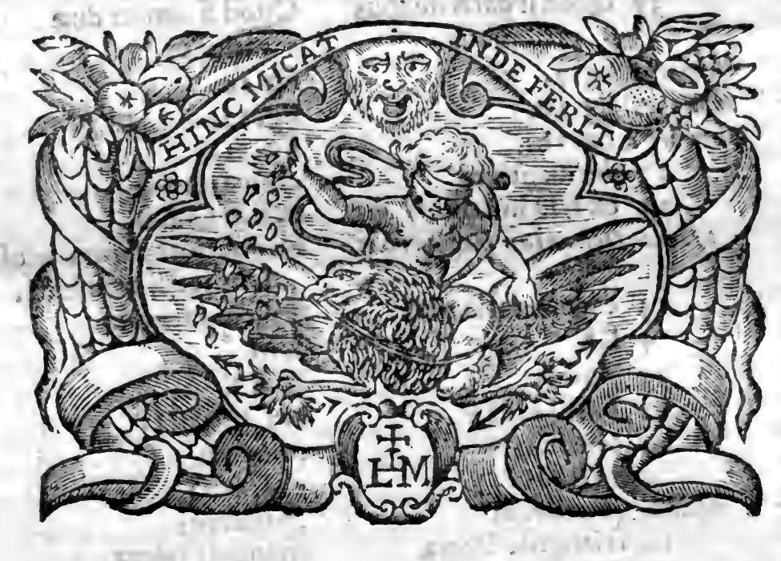

Imprimatur & Colophon Ludouici Montiae¶


I M P R I M A T V R.
Fr. Antonius Maria Cruceius Sac. Th. Magister, & Commissarius Sancti Officij Mediolani.
Iacobus Saita Canonicus Ambrosianae Basilicae pro Eminentissimo D. D. Cardinali Archiepiscopo.
Franciscus Arbona pro Excellentissimo Senatu.
Insigne typographicum: HINC MICAT · INDE FERIT, monogramma LM.
M E D I O L A N I — Ex Typographia Ludouici Montiae. MDCLXXVIII.
f. 0102 · p. Colophon Verso(Folium versum vacuum.)